CODING AGENTS AS PIXEL WORLD MODELS
traex/GPT-6.1-Sol · common50_0024
点击播放 · 原生 RGB 像素
逐轮保存的候选
回放视频、检查图与代码变化。
每份候选均可单独播放。实际图片检查记录在下方工具轨迹中。
候选 01播放与检查图
点击播放 · 原生 RGB 像素

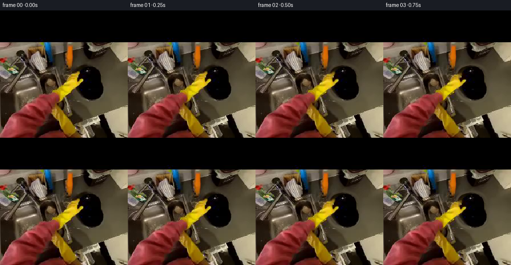
展开代码变化
--- 上一保存版本
+++ 本次保存版本
@@ -0,0 +1,154 @@
+from pathlib import Path
+import numpy as np
+from PIL import Image, ImageDraw, ImageFilter
+import cv2
+from scipy.ndimage import gaussian_filter
+import artifact_io
+
+ROOT=Path(__file__).resolve().parent
+SOURCE=np.asarray(Image.open(ROOT/'first_frame.png').convert('RGB'))
+H=W=256
+Y,X=np.mgrid[:H,:W].astype(np.float32)
+
+def polygon(points):
+ im=Image.new('L',(W*4,H*4)); ImageDraw.Draw(im).polygon([(round(x*4),round(y*4)) for x,y in points],fill=255)
+ return np.asarray(im.resize((W,H),Image.Resampling.LANCZOS),dtype=np.float32)/255
+
+def smooth(t):
+ t=np.clip(t,0,1); return t*t*(3-2*t)
+
+def composite(bg,color,alpha):
+ return bg*(1-alpha[...,None])+color*alpha[...,None]
+
+# Independent outlines are measured directly from the given photograph.
+plate_pts=[(151,121),(157,115),(166,112),(175,110),(184,111),(193,113),(199,117),(203,123),(205,132),(205,143),(207,152),(208,159),(208,166),(205,173),(201,176),(195,179),(186,181),(176,181),(167,178),(159,174),(153,168),(149,161),(146,152),(146,141),(147,131)]
+plate_mask=polygon(plate_pts)
+sleeve_pts=[(-4,256),(-3,245),(7,230),(14,219),(24,210),(36,202),(45,192),(52,184),(62,178),(71,173),(83,169),(94,167),(103,165),(111,166),(116,169),(117,176),(115,182),(110,186),(106,195),(103,203),(98,211),(90,219),(83,223),(79,230),(77,239),(70,252),(70,260)]
+glove_pts=[(102,160),(111,155),(120,148),(128,140),(131,132),(138,129),(146,126),(153,123),(159,122),(159,127),(156,131),(154,134),(154,140),(157,141),(161,138),(165,137),(167,140),(166,143),(162,147),(156,151),(148,156),(141,161),(135,166),(129,171),(123,179),(117,183),(112,185),(115,176),(115,170),(107,166),(100,164)]
+sleeve=polygon(sleeve_pts)
+glove=polygon(glove_pts)
+arm_mask=np.maximum(sleeve,glove)
+# Yellow fingertips wrap behind the plate during the grasp; the thumb stays in front.
+fingers=glove*smooth((139-Y)/3)*smooth((X-144)/3)
+front_arm=arm_mask-fingers
+
+# Replace only the regions that become uncovered. All other background pixels stay original.
+erase=np.maximum(plate_mask,arm_mask)
+erase8=cv2.dilate((erase>.02).astype(np.uint8)*255,np.ones((3,3),np.uint8))
+background=cv2.inpaint(SOURCE,erase8,6,cv2.INPAINT_TELEA).astype(np.float32)
+# The black plate concealed a plain metal worktop. Continue the existing metal's
+# low-frequency brightness and high-frequency camera texture into that area.
+rng=np.random.default_rng(211)
+worktop=(X>213)&(X<250)&(Y>113)&(Y<182)
+coords=np.stack([np.ones(worktop.sum()),X[worktop],Y[worktop]],axis=1)
+plane=[]
+for c in range(3):
+ vals=SOURCE[...,c][worktop].astype(float)
+ coef=np.linalg.lstsq(coords,vals,rcond=None)[0]
+ plane.append(coef[0]+coef[1]*X+coef[2]*Y)
+metal=np.stack(plane,axis=-1)
+texture=rng.normal(0,1,(H,W)).astype(np.float32)
+texture=gaussian_filter(texture,.65)*1.2
+metal+=texture[...,None]
+# A local smooth blend removes the stationary silhouette and its contact shadow.
+clear=cv2.GaussianBlur(cv2.dilate((plate_mask>.02).astype(np.float32),np.ones((7,7),np.uint8)),(7,7),1.3)
+clear*=smooth((X-133)/10)
+background=composite(background,metal,clear)
+background=np.clip(background,0,255)
+
+# Recover the obscured dark face with nearby pixels of the same plate.
+plate_color=SOURCE.copy()
+missing=((glove>.08)&(plate_mask>.01)).astype(np.uint8)*255
+plate_color=cv2.inpaint(plate_color,missing,4,cv2.INPAINT_TELEA).astype(np.float32)
+# Keep premultiplied layers so pixel interpolation never drags background colors onto the edges.
+arm_color=SOURCE.astype(np.float32)
+
+
+def sample_layer(color,alpha,mx,my):
+ a=cv2.remap(alpha.astype(np.float32),mx.astype(np.float32),my.astype(np.float32),cv2.INTER_LINEAR,borderMode=cv2.BORDER_CONSTANT)
+ pm=cv2.remap(color*alpha[...,None],mx.astype(np.float32),my.astype(np.float32),cv2.INTER_LINEAR,borderMode=cv2.BORDER_CONSTANT)
+ col=pm/np.maximum(a[...,None],1e-6)
+ return col,a
+
+
+def render(n):
+ if n==0: return SOURCE.copy()
+ t=n/19
+ grip=smooth(n/5)
+ lift=smooth((n-3)/10)
+ settle=smooth((n-13)/6)
+ sx=1+.36*lift-.015*settle
+ sy=1+.14*lift
+ angle=-.14*lift+.035*settle
+ cx=177+5.5*lift-1.5*settle
+ cy=146-23*lift+2.5*settle
+ # Natural small movement of the held object after it is raised.
+ if n>12:
+ cx+=.6*np.sin((n-12)*.7)
+ cy+=.4*np.sin((n-12)*.65)
+ c=np.cos(angle); s=np.sin(angle)
+ A=np.array([[c*sx,-s*sy],[s*sx,c*sy]],dtype=np.float32)
+ anchor=np.array([155.,139.],dtype=np.float32)
+ target=A@(anchor-np.array([177,146]))+np.array([cx,cy])
+ delta=target-anchor
+ hand_angle=angle*.62
+ ca=np.cos(hand_angle); sa=np.sin(hand_angle)
+ # A spatially varying displacement anchors the sleeve outside the image,
+ # articulating the wrist while preserving the glove's original texture.
+ weight=smooth((256-Y)/102)
+ rot_x=(ca-1)*(X-anchor[0])-sa*(Y-anchor[1])
+ rot_y=sa*(X-anchor[0])+(ca-1)*(Y-anchor[1])
+ curl_index=np.exp(-((X-154)/11)**2-((Y-127)/11)**2)
+ curl_thumb=np.exp(-((X-163)/8)**2-((Y-142)/7)**2)
+ dx=weight*(delta[0]+rot_x)-grip*(2.5*curl_index+1.7*curl_thumb)
+ dy=weight*(delta[1]+rot_y)+grip*(4.7*curl_index+.8*curl_thumb)
+ dx=dx.astype(np.float32); dy=dy.astype(np.float32)
+ # Invert the smooth deformation by fixed-point iteration.
+ mx=X.copy(); my=Y.copy()
+ for _ in range(8):
+ ddx=cv2.remap(dx,mx,my,cv2.INTER_LINEAR,borderMode=cv2.BORDER_REPLICATE)
+ ddy=cv2.remap(dy,mx,my,cv2.INTER_LINEAR,borderMode=cv2.BORDER_REPLICATE)
+ mx=X-ddx; my=Y-ddy
+ acol,aa=sample_layer(arm_color,arm_mask,mx,my)
+ _,fa=sample_layer(arm_color,fingers,mx,my)
+ # Map the plate itself using a perspective/tilt approximation.
+ ai=np.linalg.inv(A)
+ px=ai[0,0]*(X-cx)+ai[0,1]*(Y-cy)+177
+ py=ai[1,0]*(X-cx)+ai[1,1]*(Y-cy)+146
+ pcol,pa=sample_layer(plate_color,plate_mask,px,py)
+ frame=background.copy()
+ # Soft moving shadow weakens as the plate clears the countertop.
+ sh_x=px-1.5-2.5*lift; sh_y=py-2-7*lift
+ _,shadow=sample_layer(plate_color,plate_mask,sh_x,sh_y)
+ shadow=cv2.GaussianBlur(shadow,(15,15),2+lift*2)
+ frame*=1-shadow[...,None]*(.19-.11*lift)
+ frame=composite(frame,acol,fa*grip)
+ frame=composite(frame,pcol,pa)
+ # Use a tiny moving reflection, not a new synthetic plate: the photographed
+ # glossy texture remains the face of the dish throughout.
+ shine=np.exp(-((px-(181-5*lift))/6)**2-((py-(121+1*lift))/2.0)**2)*lift*3.5
+ frame+=shine[...,None]*pa[...,None]
+ front_alpha=np.maximum(aa-fa*grip,0)
+ frame=composite(frame,acol,front_alpha)
+ # First person head motion stays subtle and leaves the original upper black band intact.
+ camx=.65*np.sin(n*.37)*lift
+ camy=.65*np.sin(n*.27)*lift
+ view_x=(X-camx).astype(np.float32); view_y=(Y-camy).astype(np.float32)
+ moving=cv2.remap(frame,view_x,view_y,cv2.INTER_LINEAR,borderMode=cv2.BORDER_REPLICATE)
+ moving[:64]=SOURCE[:64]
+ frame=moving
+ # Gradual reveal at the very first grasp avoids mask-edge flicker.
+ if n<3:
+ blend=smooth(n/3)
+ frame=SOURCE*(1-blend)+frame*blend
+ return np.clip(np.rint(frame),0,255).astype(np.uint8)
+
+
+def main():
+ frames=np.stack([render(n) for n in range(20)])
+ artifact_io.save(frames,ROOT)
+ Image.fromarray(np.rint(background).clip(0,255).astype(np.uint8)).save(ROOT/'.tmp/background.png')
+ Image.fromarray((arm_mask*255).astype(np.uint8)).save(ROOT/'.tmp/arm_mask.png')
+ Image.fromarray(np.rint(plate_color).clip(0,255).astype(np.uint8)).save(ROOT/'.tmp/plate_recovered.png')
+
+if __name__=='__main__': main()
候选 02播放与检查图
点击播放 · 原生 RGB 像素
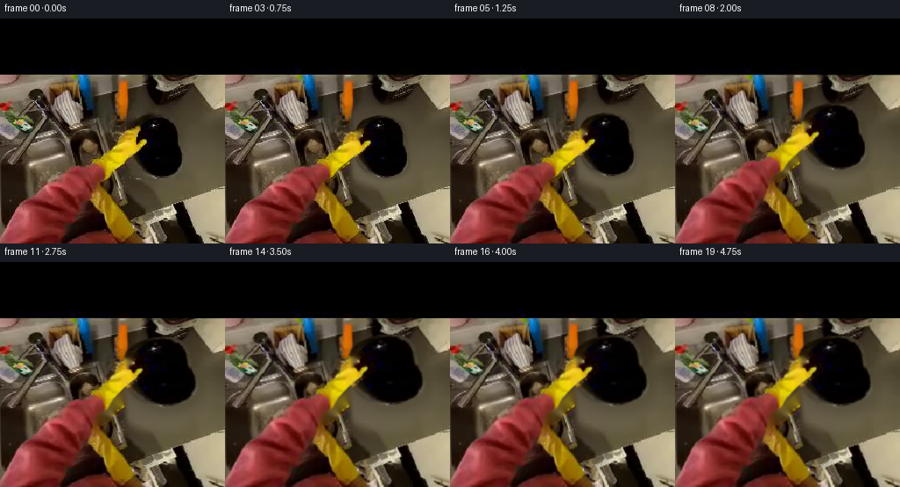
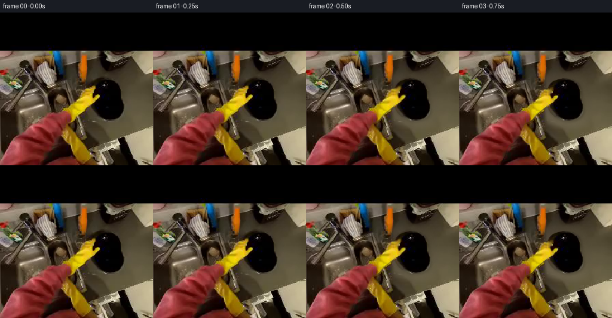
展开代码变化
--- 上一保存版本 +++ 本次保存版本 @@ -51,8 +51,8 @@ texture=gaussian_filter(texture,.65)*1.2 metal+=texture[...,None] # A local smooth blend removes the stationary silhouette and its contact shadow. -clear=cv2.GaussianBlur(cv2.dilate((plate_mask>.02).astype(np.float32),np.ones((7,7),np.uint8)),(7,7),1.3) -clear*=smooth((X-133)/10) +clear=cv2.GaussianBlur(cv2.dilate((plate_mask>.02).astype(np.float32),np.ones((23,23),np.uint8)),(25,25),5.0) +clear*=smooth((X-138)/10) background=composite(background,metal,clear) background=np.clip(background,0,255)
候选 03播放与检查图
点击播放 · 原生 RGB 像素
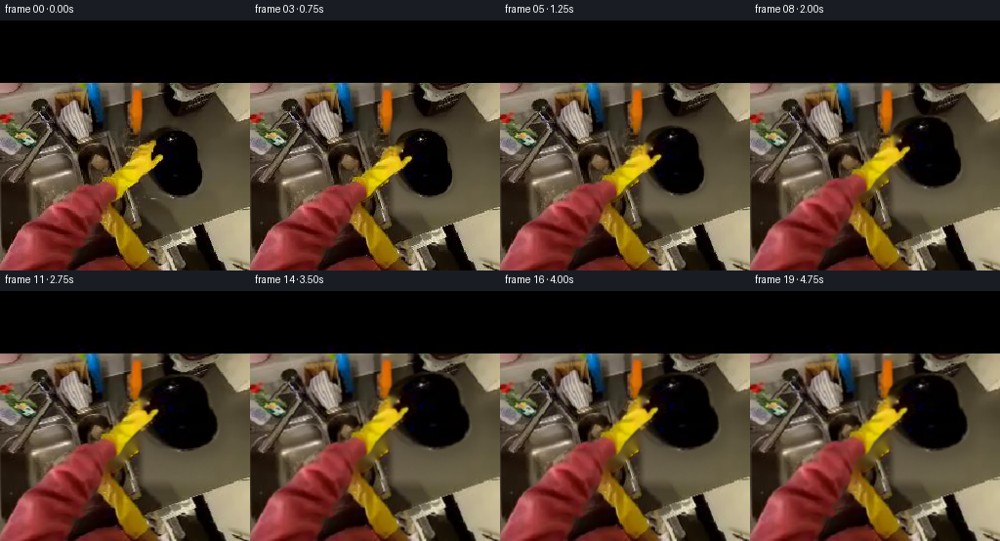
展开代码变化
--- 上一保存版本 +++ 本次保存版本 @@ -51,8 +51,7 @@ texture=gaussian_filter(texture,.65)*1.2 metal+=texture[...,None] # A local smooth blend removes the stationary silhouette and its contact shadow. -clear=cv2.GaussianBlur(cv2.dilate((plate_mask>.02).astype(np.float32),np.ones((23,23),np.uint8)),(25,25),5.0) -clear*=smooth((X-138)/10) +clear=smooth((X-139)/11)*smooth((232-X)/15)*smooth((Y-97)/14)*smooth((206-Y)/17) background=composite(background,metal,clear) background=np.clip(background,0,255)
候选 04播放与检查图
点击播放 · 原生 RGB 像素
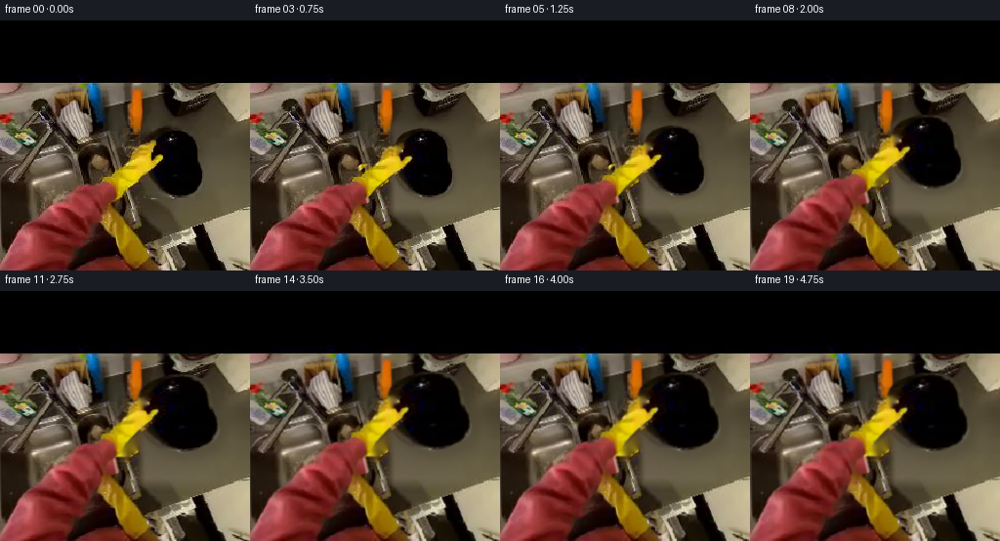
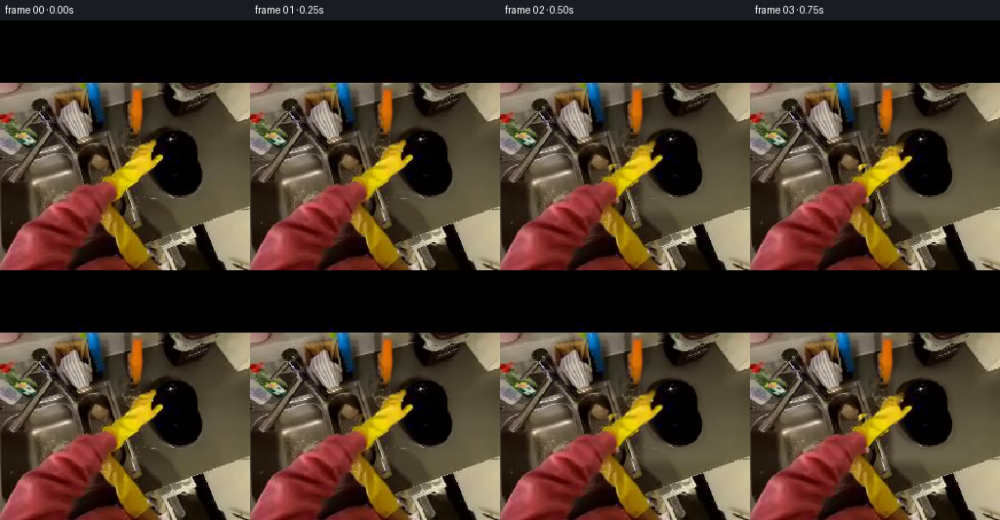
展开代码变化
--- 上一保存版本 +++ 本次保存版本 @@ -53,6 +53,19 @@ # A local smooth blend removes the stationary silhouette and its contact shadow. clear=smooth((X-139)/11)*smooth((232-X)/15)*smooth((Y-97)/14)*smooth((206-Y)/17) background=composite(background,metal,clear) +# Continue the diagonal stainless sink lip through the area previously covered +# by the wrist. Its above/below fragments in the source define the same line. +xline=104+.235*(Y-120) +xsample=np.clip(xline+18,0,255).astype(np.float32) +right=cv2.remap(SOURCE.astype(np.float32),xsample,Y,cv2.INTER_LINEAR,borderMode=cv2.BORDER_REPLICATE) +left=cv2.remap(SOURCE.astype(np.float32),np.clip(xline-13,0,255).astype(np.float32),Y,cv2.INTER_LINEAR,borderMode=cv2.BORDER_REPLICATE) +u=X-xline +base_edge=left*(1-smooth((u+3)/8))[...,None]+right*smooth((u+3)/8)[...,None] +metal_rim=np.exp(-((u-1.0)/1.65)**2)*92-np.exp(-((u-4.5)/1.3)**2)*24 +base_edge+=metal_rim[...,None] +repair=smooth((Y-141)/8)*smooth((194-Y)/9)*np.exp(-(u/13)**4) +repair*=cv2.dilate((arm_mask>.05).astype(np.float32),np.ones((7,7),np.uint8)) +background=composite(background,base_edge,repair) background=np.clip(background,0,255) # Recover the obscured dark face with nearby pixels of the same plate.
候选 05播放与检查图
点击播放 · 原生 RGB 像素
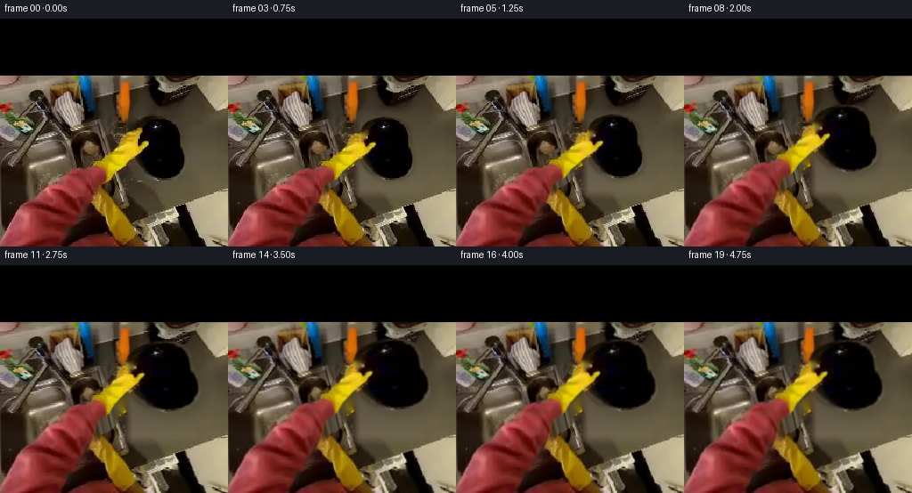
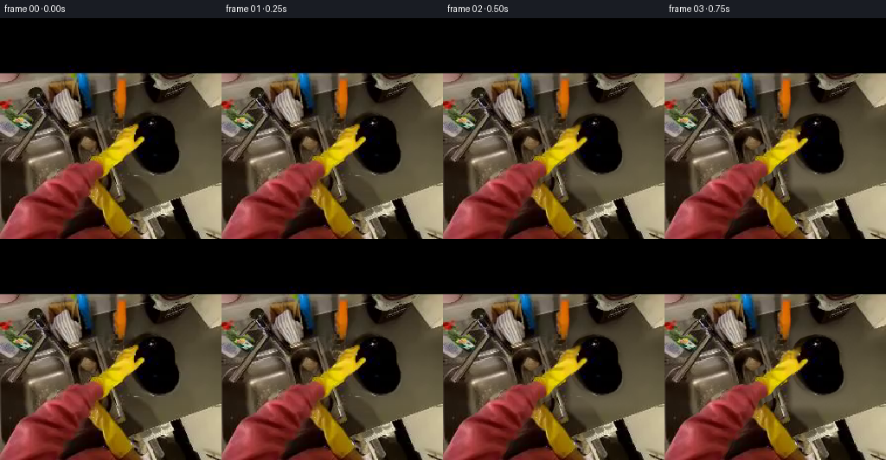
展开代码变化
--- 上一保存版本 +++ 本次保存版本 @@ -56,15 +56,12 @@ # Continue the diagonal stainless sink lip through the area previously covered # by the wrist. Its above/below fragments in the source define the same line. xline=104+.235*(Y-120) -xsample=np.clip(xline+18,0,255).astype(np.float32) -right=cv2.remap(SOURCE.astype(np.float32),xsample,Y,cv2.INTER_LINEAR,borderMode=cv2.BORDER_REPLICATE) -left=cv2.remap(SOURCE.astype(np.float32),np.clip(xline-13,0,255).astype(np.float32),Y,cv2.INTER_LINEAR,borderMode=cv2.BORDER_REPLICATE) u=X-xline -base_edge=left*(1-smooth((u+3)/8))[...,None]+right*smooth((u+3)/8)[...,None] -metal_rim=np.exp(-((u-1.0)/1.65)**2)*92-np.exp(-((u-4.5)/1.3)**2)*24 -base_edge+=metal_rim[...,None] -repair=smooth((Y-141)/8)*smooth((194-Y)/9)*np.exp(-(u/13)**4) -repair*=cv2.dilate((arm_mask>.05).astype(np.float32),np.ones((7,7),np.uint8)) +# Sample the unobscured sink-edge cross-section near the top of the sink. +base_edge=cv2.remap(SOURCE.astype(np.float32),np.clip(105.2+u,0,255).astype(np.float32),np.full((H,W),125,dtype=np.float32),cv2.INTER_LINEAR,borderMode=cv2.BORDER_REPLICATE) +base_edge+=texture[...,None] +repair=smooth((Y-142)/6)*smooth((199-Y)/9)*np.exp(-(u/19)**4) +repair*=cv2.dilate((arm_mask>.05).astype(np.float32),np.ones((9,9),np.uint8)) background=composite(background,base_edge,repair) background=np.clip(background,0,255)
候选 06播放与检查图
点击播放 · 原生 RGB 像素
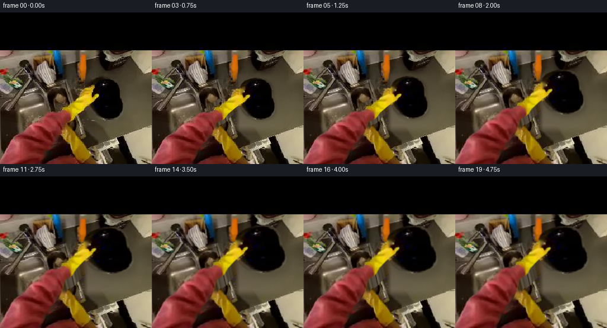
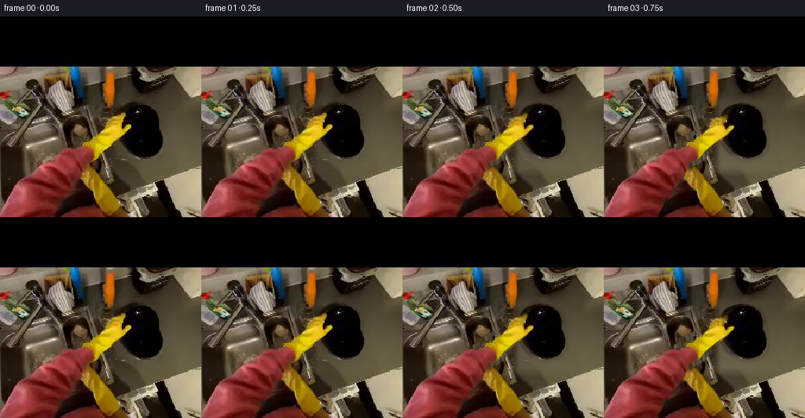
展开代码变化
--- 上一保存版本 +++ 本次保存版本 @@ -34,7 +34,7 @@ # Replace only the regions that become uncovered. All other background pixels stay original. erase=np.maximum(plate_mask,arm_mask) -erase8=cv2.dilate((erase>.02).astype(np.uint8)*255,np.ones((3,3),np.uint8)) +erase8=cv2.dilate((erase>.02).astype(np.uint8)*255,np.ones((5,5),np.uint8)) background=cv2.inpaint(SOURCE,erase8,6,cv2.INPAINT_TELEA).astype(np.float32) # The black plate concealed a plain metal worktop. Continue the existing metal's # low-frequency brightness and high-frequency camera texture into that area. @@ -60,7 +60,7 @@ # Sample the unobscured sink-edge cross-section near the top of the sink. base_edge=cv2.remap(SOURCE.astype(np.float32),np.clip(105.2+u,0,255).astype(np.float32),np.full((H,W),125,dtype=np.float32),cv2.INTER_LINEAR,borderMode=cv2.BORDER_REPLICATE) base_edge+=texture[...,None] -repair=smooth((Y-142)/6)*smooth((199-Y)/9)*np.exp(-(u/19)**4) +repair=smooth((Y-142)/6)*smooth((199-Y)/9)*np.exp(-(u/26)**4) repair*=cv2.dilate((arm_mask>.05).astype(np.float32),np.ones((9,9),np.uint8)) background=composite(background,base_edge,repair) background=np.clip(background,0,255)
可观测工具轨迹
实际执行的命令与返回图片。
命令 1exit 0
/bin/bash -lc "ls -la && cat prompt.txt && printf '\\n---RULES---\\n' && cat GENERATION_RULES.md"
命令 2exit 0
/bin/bash -lc "cat task_spec.json && cat artifact_io.py && python - <<'PY'
from PIL import Image
im=Image.open('first_frame.png'); print(im.mode, im.size); im.resize((768,768)).save('.tmp/frame_large.png')
PY"命令 3exit 0
/bin/bash -lc "python - <<'PY'
from PIL import Image, ImageDraw
im=Image.open('first_frame.png').resize((1024,1024))
d=ImageDraw.Draw(im)
for x in range(0,256,10):
d.line((x*4,256,x*4,1024),fill=(255,255,255),width=1); d.text((x*4,260),str(x),fill='red')
for y in range(70,256,10):
d.line((0,y*4,1024,y*4),fill=(255,255,255),width=1);d.text((0,y*4),str(y),fill='red')
im.save('.tmp/grid.png')
PY"命令 4exit 0
/bin/bash -lc "python - <<'PY'
from PIL import Image
im=Image.open('first_frame.png')
im.crop((90,105,220,191)).resize((1040,688)).save('.tmp/detail.png')
PY"命令 5exit 0
/bin/bash -lc "python - <<'PY' import importlib.util for m in ['numpy','PIL','scipy','cv2']: print(m, bool(importlib.util.find_spec(m))) PY"
命令 6exit 1
/bin/bash -lc "cat > generate.py <<'PY'
from pathlib import Path
import numpy as np
from PIL import Image, ImageDraw, ImageFilter
import cv2
from scipy.ndimage import gaussian_filter
import artifact_io
ROOT=Path(__file__).resolve().parent
SOURCE=np.asarray(Image.open(ROOT/'first_frame.png').convert('RGB'))
H=W=256
Y,X=np.mgrid[:H,:W].astype(np.float32)
def polygon(points):
im=Image.new('L',(W*4,H*4)); ImageDraw.Draw(im).polygon([(round(x*4),round(y*4)) for x,y in points],fill=255)
return np.asarray(im.resize((W,H),Image.Resampling.LANCZOS),dtype=np.float32)/255
def smooth(t):
t=np.clip(t,0,1); return t*t*(3-2*t)
def composite(bg,color,alpha):
return bg*(1-alpha[...,None])+color*alpha[...,None]
# Independent outlines are measured directly from the given photograph.
plate_pts=[(151,121),(157,115),(166,112),(175,110),(184,111),(193,113),(199,117),(203,123),(205,132),(205,143),(207,152),(208,159),(208,166),(205,173),(201,176),(195,179),(186,181),(176,181),(167,178),(159,174),(153,168),(149,161),(146,152),(146,141),(147,131)]
plate_mask=polygon(plate_pts)
sleeve_pts=[(-4,256),(-3,245),(7,230),(14,219),(24,210),(36,202),(45,192),(52,184),(62,178),(71,173),(83,169),(94,167),(103,165),(111,166),(116,169),(117,176),(115,182),(110,186),(106,195),(103,203),(98,211),(90,219),(83,223),(79,230),(77,239),(70,252),(70,260)]
glove_pts=[(102,160),(111,155),(120,148),(128,140),(131,132),(138,129),(146,126),(153,123),(159,122),(159,127),(156,131),(154,134),(154,140),(157,141),(161,138),(165,137),(167,140),(166,143),(162,147),(156,151),(148,156),(141,161),(135,166),(129,171),(123,179),(117,183),(112,185),(115,176),(115,170),(107,166),(100,164)]
sleeve=polygon(sleeve_pts)
glove=polygon(glove_pts)
arm_mask=np.maximum(sleeve,glove)
# Yellow fingertips wrap behind the plate during the grasp; the thumb stays in front.
fingers=glove*smooth((139-Y)/3)*smooth((X-144)/3)
front_arm=arm_mask-fingers
# Replace only the regions that become uncovered. All other background pixels stay original.
erase=np.maximum(plate_mask,arm_mask)
erase8=cv2.dilate((erase>.02).astype(np.uint8)*255,np.ones((3,3),np.uint8))
background=cv2.inpaint(SOURCE,erase8,6,cv2.INPAINT_TELEA).astype(np.float32)
# The black plate concealed a plain metal worktop. Continue the existing metal's
# low-frequency brightness and high-frequency camera texture into that area.
rng=np.random.default_rng(211)
worktop=(X>213)&(X<250)&(Y>113)&(Y<182)
coords=np.stack([np.ones(worktop.sum()),X[worktop],Y[worktop]],axis=1)
plane=[]
for c in range(3):
vals=SOURCE[...,c][worktop].astype(float)
coef=np.linalg.lstsq(coords,vals,rcond=None)[0]
plane.append(coef[0]+coef[1]*X+coef[2]*Y)
metal=np.stack(plane,axis=-1)
texture=rng.normal(0,1,(H,W)).astype(np.float32)
texture=gaussian_filter(texture,.65)*1.2
metal+=texture[...,None]
# A local smooth blend removes the stationary silhouette and its contact shadow.
clear=cv2.GaussianBlur(cv2.dilate((plate_mask>.02).astype(np.float32),np.ones((7,7),np.uint8)),(7,7),1.3)
clear*=smooth((X-133)/10)
background=composite(background,metal,clear)
background=np.clip(background,0,255)
# Recover the obscured dark face with nearby pixels of the same plate.
plate_color=SOURCE.copy()
missing=((glove>.08)&(plate_mask>.01)).astype(np.uint8)*255
plate_color=cv2.inpaint(plate_color,missing,4,cv2.INPAINT_TELEA).astype(np.float32)
# Keep premultiplied layers so pixel interpolation never drags background colors onto the edges.
arm_color=SOURCE.astype(np.float32)
def sample_layer(color,alpha,mx,my):
a=cv2.remap(alpha.astype(np.float32),mx.astype(np.float32),my.astype(np.float32),cv2.INTER_LINEAR,borderMode=cv2.BORDER_CONSTANT)
pm=cv2.remap(color*alpha[...,None],mx.astype(np.float32),my.astype(np.float32),cv2.INTER_LINEAR,borderMode=cv2.BORDER_CONSTANT)
col=pm/np.maximum(a[...,None],1e-6)
return col,a
def render(n):
if n==0: return SOURCE.copy()
t=n/19
grip=smooth(n/5)
lift=smooth((n-3)/10)
settle=smooth((n-13)/6)
sx=1+.36*lift-.015*settle
sy=1+.14*lift
angle=-.14*lift+.035*settle
cx=177+5.5*lift-1.5*settle
cy=146-23*lift+2.5*settle
# Natural small movement of the held object after it is raised.
if n>12:
cx+=.6*np.sin((n-12)*.7)
cy+=.4*np.sin((n-12)*.65)
c=np.cos(angle); s=np.sin(angle)
A=np.array([[c*sx,-s*sy],[s*sx,c*sy]],dtype=np.float32)
anchor=np.array([155.,139.],dtype=np.float32)
target=A@(anchor-np.array([177,146]))+np.array([cx,cy])
delta=target-anchor
hand_angle=angle*.62
ca=np.cos(hand_angle); sa=np.sin(hand_angle)
# A spatially varying displacement anchors the sleeve outside the image,
# articulating the wrist while preserving the glove's original texture.
weight=smooth((256-Y)/102)
rot_x=(ca-1)*(X-anchor[0])-sa*(Y-anchor[1])
rot_y=sa*(X-anchor[0])+(ca-1)*(Y-anchor[1])
curl_index=np.exp(-((X-154)/11)**2-((Y-127)/11)**2)
curl_thumb=np.exp(-((X-163)/8)**2-((Y-142)/7)**2)
dx=weight*(delta[0]+rot_x)-grip*(2.5*curl_index+1.7*curl_thumb)
dy=weight*(delta[1]+rot_y)+grip*(4.7*curl_index+.8*curl_thumb)
# Invert the smooth deformation by fixed-point iteration.
mx=X.copy(); my=Y.copy()
for _ in range(8):
ddx=cv2.remap(dx,mx,my,cv2.INTER_LINEAR,borderMode=cv2.BORDER_REPLICATE)
ddy=cv2.remap(dy,mx,my,cv2.INTER_LINEAR,borderMode=cv2.BORDER_REPLICATE)
mx=X-ddx; my=Y-ddy
acol,aa=sample_layer(arm_color,arm_mask,mx,my)
_,fa=sample_layer(arm_color,fingers,mx,my)
# Map the plate itself using a perspective/tilt approximation.
ai=np.linalg.inv(A)
px=ai[0,0]*(X-cx)+ai[0,1]*(Y-cy)+177
py=ai[1,0]*(X-cx)+ai[1,1]*(Y-cy)+146
pcol,pa=sample_layer(plate_color,plate_mask,px,py)
frame=background.copy()
# Soft moving shadow weakens as the plate clears the countertop.
sh_x=px-1.5-2.5*lift; sh_y=py-2-7*lift
_,shadow=sample_layer(plate_color,plate_mask,sh_x,sh_y)
shadow=cv2.GaussianBlur(shadow,(15,15),2+lift*2)
frame*=1-shadow[...,None]*(.19-.11*lift)
frame=composite(frame,acol,fa*grip)
frame=composite(frame,pcol,pa)
# Use a tiny moving reflection, not a new synthetic plate: the photographed
# glossy texture remains the face of the dish throughout.
shine=np.exp(-((px-(181-5*lift))/6)**2-((py-(121+1*lift))/2.0)**2)*lift*3.5
frame+=shine[...,None]*pa[...,None]
front_alpha=np.maximum(aa-fa*grip,0)
frame=composite(frame,acol,front_alpha)
# First person head motion stays subtle and leaves the original upper black band intact.
camx=.65*np.sin(n*.37)*lift
camy=.65*np.sin(n*.27)*lift
view_x=X-camx; view_y=Y-camy
moving=cv2.remap(frame,view_x,view_y,cv2.INTER_LINEAR,borderMode=cv2.BORDER_REPLICATE)
moving[:64]=SOURCE[:64]
frame=moving
# Gradual reveal at the very first grasp avoids mask-edge flicker.
if n<3:
blend=smooth(n/3)
frame=SOURCE*(1-blend)+frame*blend
return np.clip(np.rint(frame),0,255).astype(np.uint8)
def main():
frames=np.stack([render(n) for n in range(20)])
artifact_io.save(frames,ROOT)
Image.fromarray(np.rint(background).clip(0,255).astype(np.uint8)).save(ROOT/'.tmp/background.png')
Image.fromarray((arm_mask*255).astype(np.uint8)).save(ROOT/'.tmp/arm_mask.png')
Image.fromarray(np.rint(plate_color).clip(0,255).astype(np.uint8)).save(ROOT/'.tmp/plate_recovered.png')
if __name__=='__main__': main()
PY
python generate.py"命令 7exit 1
/bin/bash -lc "python - <<'PY'
p='generate.py'
s=open(p).read().replace(' # Invert the smooth deformation by fixed-point iteration.',' dx=dx.astype(np.float32); dy=dy.astype(np.float32)\\n # Invert the smooth deformation by fixed-point iteration.')
open(p,'w').write(s)
PY
python generate.py"命令 8exit 0
/bin/bash -lc "sed -i 's/view_x=X-camx; view_y=Y-camy/view_x=(X-camx).astype(np.float32); view_y=(Y-camy).astype(np.float32)/' generate.py python generate.py"
命令 9exit 0
/bin/bash -lc "python - <<'PY' p='generate.py'; s=open(p).read();s=s.replace(\"clear=cv2.GaussianBlur(cv2.dilate((plate_mask>.02).astype(np.float32),np.ones((7,7),np.uint8)),(7,7),1.3)\\nclear*=smooth((X-133)/10)\",\"clear=cv2.GaussianBlur(cv2.dilate((plate_mask>.02).astype(np.float32),np.ones((23,23),np.uint8)),(25,25),5.0)\\nclear*=smooth((X-138)/10)\") open(p,'w').write(s) PY python generate.py"
命令 10exit 0
/bin/bash -lc "python - <<'PY' import generate as g for y in [110,130,150,170,185,195]: print(y, [(x,g.SOURCE[y,x].tolist(),g.metal[y,x].round().tolist(),round(float(g.clear[y,x]),2)) for x in [145,160,180,200,215,230]]) PY"
命令 11exit 0
/bin/bash -lc "python - <<'PY'
p='generate.py';s=open(p).read();s=s.replace(\"clear=cv2.GaussianBlur(cv2.dilate((plate_mask>.02).astype(np.float32),np.ones((23,23),np.uint8)),(25,25),5.0)\\nclear*=smooth((X-138)/10)\",\"clear=smooth((X-139)/11)*smooth((232-X)/15)*smooth((Y-97)/14)*smooth((206-Y)/17)\")
open(p,'w').write(s)
PY
python generate.py
python - <<'PY'
from PIL import Image
Image.open('frames/19.png').resize((768,768)).save('.tmp/final_large.png')
PY"命令 12exit 0
/bin/bash -lc "python - <<'PY'
from PIL import Image
im=Image.open('first_frame.png');im.crop((90,110,148,220)).resize((348,660)).save('.tmp/rim.png')
PY"命令 13exit 0
/bin/bash -lc "python - <<'PY'
p='generate.py';s=open(p).read();where=\"background=np.clip(background,0,255)\"
replacement=\"\"\"# Continue the diagonal stainless sink lip through the area previously covered
# by the wrist. Its above/below fragments in the source define the same line.
xline=104+.235*(Y-120)
xsample=np.clip(xline+18,0,255).astype(np.float32)
right=cv2.remap(SOURCE.astype(np.float32),xsample,Y,cv2.INTER_LINEAR,borderMode=cv2.BORDER_REPLICATE)
left=cv2.remap(SOURCE.astype(np.float32),np.clip(xline-13,0,255).astype(np.float32),Y,cv2.INTER_LINEAR,borderMode=cv2.BORDER_REPLICATE)
u=X-xline
base_edge=left*(1-smooth((u+3)/8))[...,None]+right*smooth((u+3)/8)[...,None]
metal_rim=np.exp(-((u-1.0)/1.65)**2)*92-np.exp(-((u-4.5)/1.3)**2)*24
base_edge+=metal_rim[...,None]
repair=smooth((Y-141)/8)*smooth((194-Y)/9)*np.exp(-(u/13)**4)
repair*=cv2.dilate((arm_mask>.05).astype(np.float32),np.ones((7,7),np.uint8))
background=composite(background,base_edge,repair)
background=np.clip(background,0,255)\"\"\"
s=s.replace(where,replacement)
open(p,'w').write(s)
PY
python generate.py
python - <<'PY'
from PIL import Image
Image.open('frames/19.png').resize((768,768)).save('.tmp/final_large.png')
PY"命令 14exit 0
/bin/bash -lc "python - <<'PY'
p='generate.py';s=open(p).read();a=s.index('xsample=np.clip');b=s.index('background=composite(background,base_edge,repair)')
s=s[:a]+'''u=X-xline
# Sample the unobscured sink-edge cross-section near the top of the sink.
base_edge=cv2.remap(SOURCE.astype(np.float32),np.clip(105.2+u,0,255).astype(np.float32),np.full((H,W),125,dtype=np.float32),cv2.INTER_LINEAR,borderMode=cv2.BORDER_REPLICATE)
base_edge+=texture[...,None]
repair=smooth((Y-142)/6)*smooth((199-Y)/9)*np.exp(-(u/19)**4)
repair*=cv2.dilate((arm_mask>.05).astype(np.float32),np.ones((9,9),np.uint8))
''' +s[b:]
open(p,'w').write(s)
PY
python generate.py
python - <<'PY'
from PIL import Image
Image.open('frames/19.png').resize((768,768)).save('.tmp/final_large.png')
PY"命令 15exit 0
/bin/bash -lc "python - <<'PY'
p='generate.py';s=open(p).read().replace(\"erase>.02).astype(np.uint8)*255,np.ones((3,3),np.uint8)\",\"erase>.02).astype(np.uint8)*255,np.ones((5,5),np.uint8)\").replace('np.exp(-(u/19)**4)','np.exp(-(u/26)**4)')
open(p,'w').write(s)
PY
python generate.py
python - <<'PY'
from PIL import Image
import numpy as np
from pathlib import Path
files=sorted(Path('frames').glob('*.png'))
assert len(files)==20
frames=np.stack([np.asarray(Image.open(p)) for p in files])
assert frames.shape==(20,256,256,3) and frames.dtype==np.uint8
assert np.array_equal(frames[0],np.asarray(Image.open('first_frame.png')))
print('Validated:', frames.shape, frames.dtype, 'frame 00 is pixel-identical')
PY
command -v ffmpeg || true"视觉工具实际返回图片 1
视觉工具实际返回图片 2
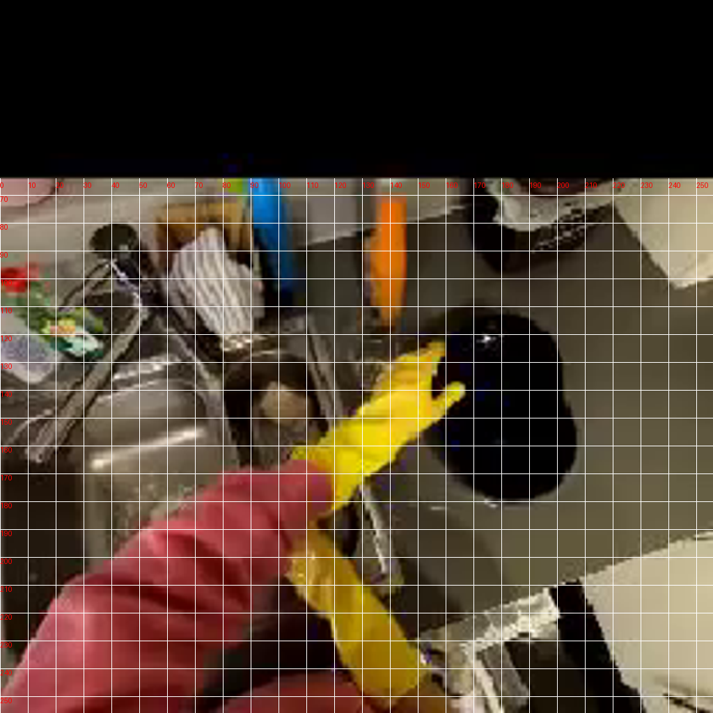
视觉工具实际返回图片 3
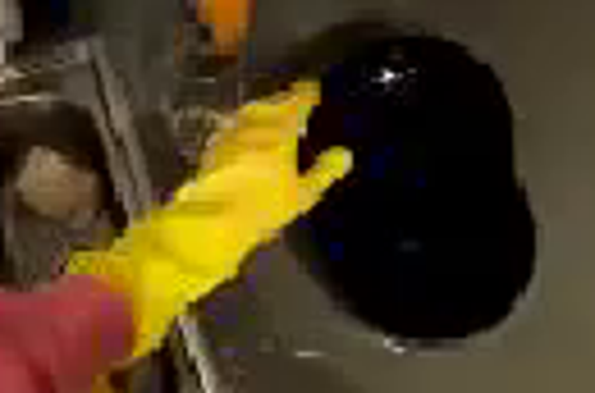
视觉工具实际返回图片 4
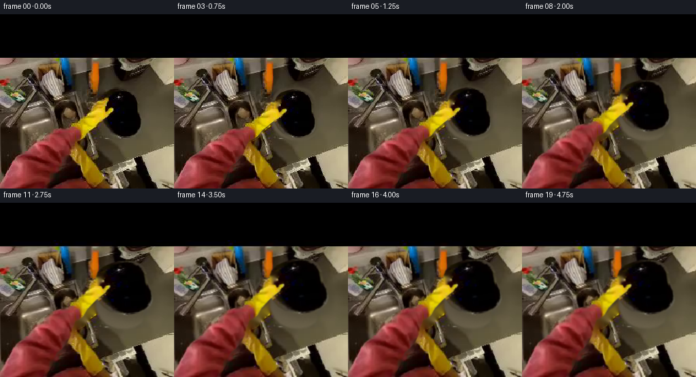
视觉工具实际返回图片 5
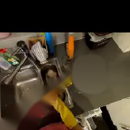
视觉工具实际返回图片 6
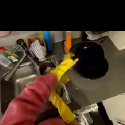
视觉工具实际返回图片 7
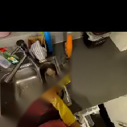
视觉工具实际返回图片 8
视觉工具实际返回图片 9
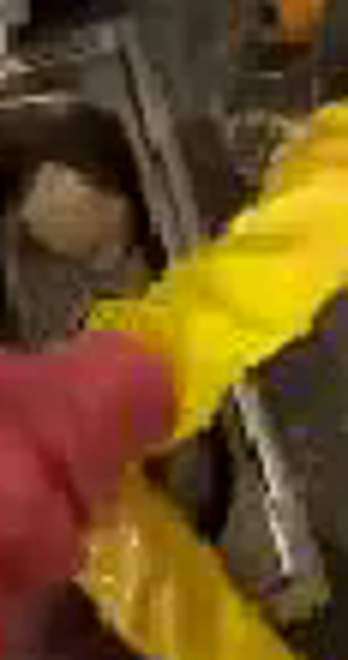
视觉工具实际返回图片 10
视觉工具实际返回图片 11
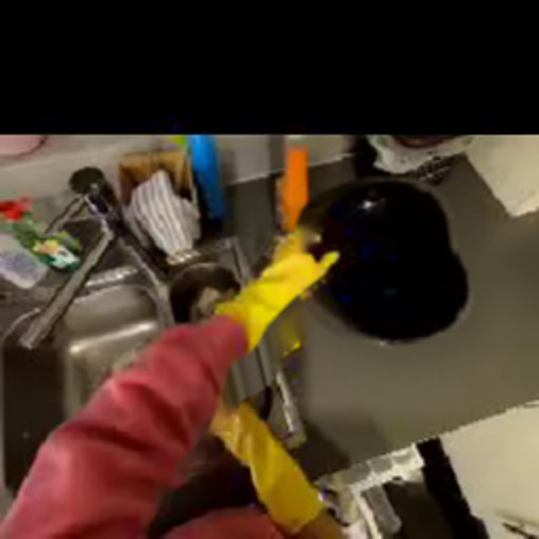
保存候选 6 份；完成命令 15 次；可验证图片返回 11 张。原始 API 响应与完整日志保留在本地。